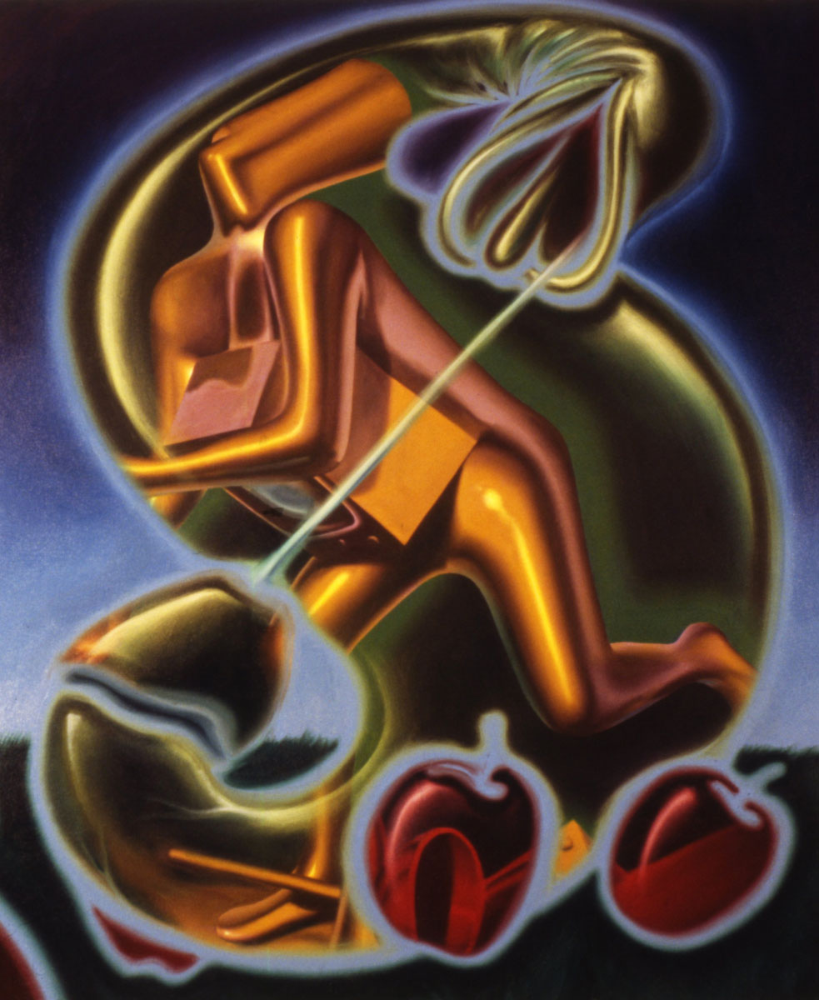

Exhibitions
Forgeries, The Art Store, New York, New York, US, 1990. Held shortly before March 28, 1990; exact opening and closing dates are not documented. English exhibited unsigned paintings he had created in Mark Kostabi’s recognizable style, promoting them as “Kostabi at 90% off.”
Notes
Collaborative work by Ron English and Mark Kostabi.